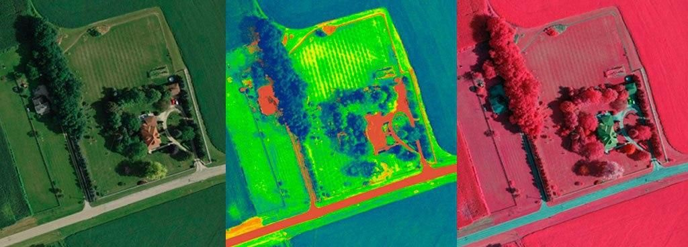

Карта NDVI
Нормализованный вегетационный индекс - показатель актуального состояния культурных растений. Определяется на основании отражения и поглощения листьями разных типов световых волн.
Нормализованный вегетационный индекс - показатель актуального состояния культурных растений. Определяется на основании отражения и поглощения листьями разных типов световых волн.
Для каждого агронома и фермера первостепенной задачей, является получение качественного и объемного урожая. Для достижения этого результата применяют разнообразные методики точного земледелия, среди которых особой популярностью пользуется индекс NDVI. Он позволяет спрогнозировать объемы урожая и максимально точно оценивать реальное состояние подрастающих растений.
Индекс NDVI: что это?
Востребованный в сельском хозяйстве нормализованный вегетационный индекс (NDVI) – представляет собой показатель актуального состояния культурных и сорных растений, который определяется путем вычисления данных, полученных на основании отражения и поглощения листьями разных типов световых волн. Здоровые растения имеют свойство пропускать красный свет и отражать зеленый. Если сравнивать данные по каждому отражению инфракрасного спектра, то в результате получим NDVI – показатель актуального состояния роста и здоровья растений, указывающий на аномальные зоны полей.
Заполните форму и наш специалист свяжется с вами в ближайшее время.